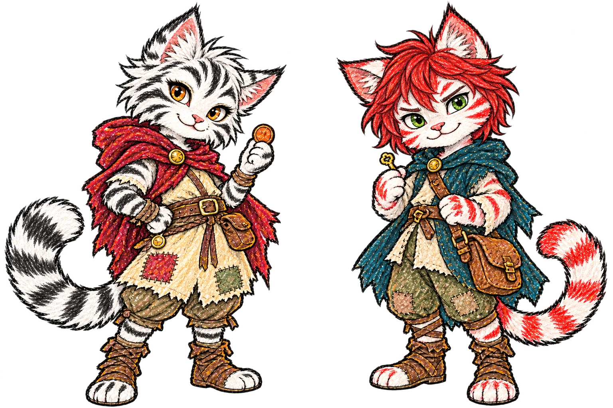

02 / NÃO COMEÇOU COM “ERA UMA VEZ”
A GENTE SÓ QUERIA
UM LUGAR.
Das ruas geladas a uma porta aberta.
O começo da história dos Pickpocket.
PSIU… NINGUÉM ESTÁ OLHANDO.
Este aqui guarda duas.
Toque no baú para tentar a sorte

2 pequenos“se sumir uma moeda, não fomos nós.” ↗
UM DIÁRIO QUASE SECRETO
Oi! Somos Khajira e Otumuz. Este é o nosso diário. Pode olhar, mas não conta pro Arquimago, tá?
Abra nossas fichas ↗Tem uma história aqui também ↓01 / FICHAS FEITAS PELA GENTE
A gente sabe escrever o próprio nome.
O resto foi a Khajira que ajudou.
— Otumuz, muito ocupado
02 / NÃO COMEÇOU COM “ERA UMA VEZ”
Das ruas geladas a uma porta aberta.
O começo da história dos Pickpocket.
03 / NÃO MEXE! TÁ, PODE MEXER.
Toque nos objetos. Cada um guarda um pedacinho da história.
0 de 4 memórias descobertas
Durante muito tempo, eles tiveram apenas um ao outro.
Khajira & Otumuz Pickpocket
Sob a tutela do Arquimago Sa’hin Zah’Dar · Winterhold